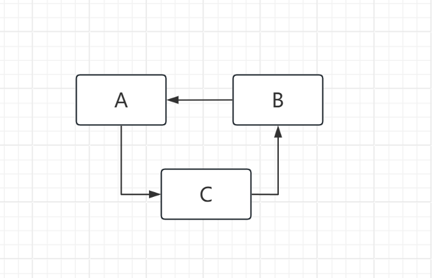
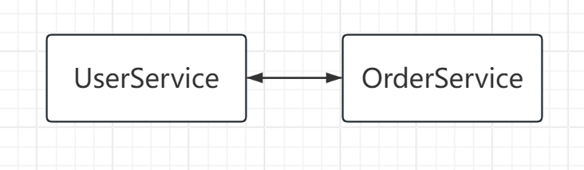
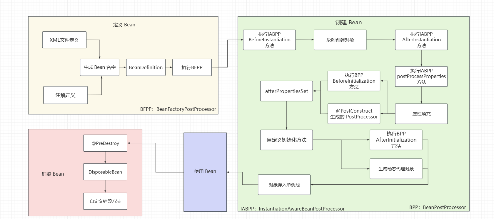
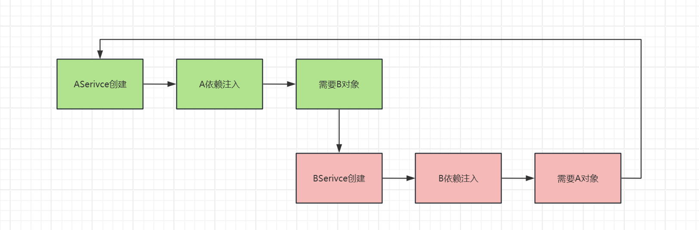
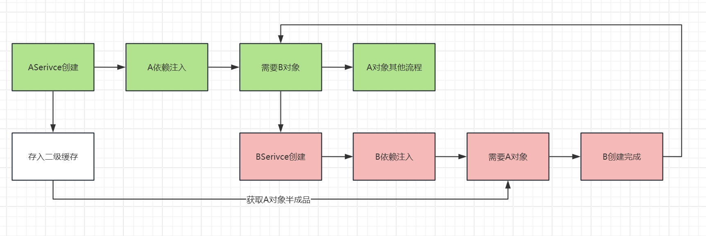

Spring 循环依赖是 Spring 设计中的典型问题，它涉及到许多核心思想，如：IOC，AOP，反射。循环依赖的解决是 Spring 设计哲学的极佳体现之一，本文将通过原理与图解结合的形式，试图讲清 Spring 对循环依赖的设计思路与解决方案。
因原型(多例) Bean 不支持循环依赖，故下文讨论范围限于单例 Bean。
循环依赖
在 Spring 中类与类之间的依赖关系形成闭环(特指一个 Bean 引用另一个 Bean)会形成循环依赖。
例如，给定 A B C 三类。
在 A 类中依赖 B 类，B 类中依赖 C 类，C 类中注依赖 A 类。
用图示表示如下：

一般生产中，更经常遇到的是两个类互相依赖的情况。
例如：
给定 UserService OrderService 两个 Service Bean。
OrderService 需要通过 UserService 查询订单对应用户；UserService 需要通过 OrderService 查询用户所属订单。
两者互相依赖，关系图如下：

此时，发生循环依赖问题，解决循环依赖问题之前，首先需要了解 Spring Bean 的创建流程及生命周期。
在阅读本文之前，强烈推荐你阅读Bean生命周期相关文章。
Bean的创建
在无循环依赖情况下，Bean 创建大致遵循以下步骤：

其中单例池为：DefaultSingletonBeanRegistry#singletonObjects。
public class DefaultSingletonBeanRegistry
extends SimpleAliasRegistry
implements SingletonBeanRegistry {
// ....
private final Map<String, Object> singletonObjects = new ConcurrentHashMap(256);
// ....
}
其中，singletonObjects 存储单例、已成熟的对象。
与之对应的，根据上述创建图，Bean 在创建期间大体有 5 种状态：等待创建 -> 反射创建普通对象 -> 属性填充/依赖注入(后的对象) -> AOP完成的动态代理对象 -> (存入单例池的)成熟对象。
为了下文表述更加清晰，请牢记上述 Bean 五种状态顺序，至少需要牢记以下准则：
- 正常情况下，AOP 在属性注入之后
- 属性填充针对的是未进行 AOP 的原始对象(未经过动态代理的对象)，即对半成品对象进行属性填充。
二级缓存的引入
现给定例子 AService BService，其中两者互相引用。
假定现创建 AService，此时在属性注入环节，未观察到 BService，则进入 BService 创建流程。
在 BService 创建流程下，需要对 AService 进行注入，此时陷入循环。

为了打破这种循环，我们需要将 ASerivce 创建实例但未注入完成的半成品对象暂时储存起来，以供 BService 使用。
由此，Spring 引入了earlySingletonObjects，意为早期单例对象，用于缓存创建完成、但属性尚未注入的对象。
由此，可以得到新流程：

上述流程看似完美，但忽略了 Spring 中的重要功能：AOP。
经过 AOP 创建代理对象，存入单例池的实际上是由框架生成的代理对象。
即：在理想情况来说，AService 中引入的属性应是 AOP 后的代理对象 BService_Proxy，而 B 对象中引入的属性应当是 AOP 后的代理对象 AService_Proxy，而上述解决方式明显存在缺陷。
但根据上述解决方案，存入二级缓存的是未 AOP 的 AService 原对象。而在 Bean 创建流程中，AOP 位于属性注入之后进行。
为了解决该问题，Spring 在检测到循环依赖后，会将 AOP 流程提前进行。
三级缓存的引入
为了提前 AOP 操作，需要判断是否进行循环引用，Spring 在创建 Bean 流程中会判断循环依赖：
// org.springframework.beans.factory.support.AbstractAutowireCapableBeanFactory#doCreateBean片段：
boolean earlySingletonExposure = (mbd.isSingleton() && this.allowCircularReferences &&
isSingletonCurrentlyInCreation(beanName));
if (earlySingletonExposure) {
if (logger.isTraceEnabled()) {
logger.trace("Eagerly caching bean '" + beanName +
"' to allow for resolving potential circular references");
}
addSingletonFactory(beanName, () -> getEarlyBeanReference(beanName, mbd, bean));
}
在实践中，检测循环依赖需要判断：Bean 是否单例、是否允许循环依赖、该 Bean 是否处于创建流程中。
isSingletonCurrentlyInCreation() 用于判断该 Bean 是否在流程中，其实现是一个元素为 String 的集合。
该 Bean 存入三级缓存，即：
而在判断确认后，会将该 Bean 存入三级缓存，即：
private final Map<String, ObjectFactory<?>> singletonFactories = new HashMap<>(16);
准确来说，存入的不是 Bean，而是一个工厂 Bean，该工厂是一个函数式接口：
@FunctionalInterface
public interface ObjectFactory<T> {
/**
* Return an instance (possibly shared or independent)
* of the object managed by this factory.
* @return the resulting instance
* @throws BeansException in case of creation errors
*/
T getObject() throws BeansException;
}
在 Spring 实现中，存入了一段 lambda 表达式，该 lambda 表达式最终提前进行 AOP 返回代理对象：
protected Object getEarlyBeanReference(String beanName, RootBeanDefinition mbd, Object bean) {
Object exposedObject = bean;
if (!mbd.isSynthetic() && hasInstantiationAwareBeanPostProcessors()) {
for (SmartInstantiationAwareBeanPostProcessor bp : getBeanPostProcessorCache().smartInstantiationAware) {
exposedObject = bp.getEarlyBeanReference(exposedObject, beanName);
}
}
return exposedObject;
}
在循环依赖时，Spring 采用的思想为提前暴露需要的 Bean，以此引申出二级缓存作为实现。
三级缓存并不能完全解决循环依赖
当循环依赖基于构造器注入对象时，Spring 无法解决该问题，直接抛出异常：
@Service
public class AService {
BService bService;
public AService(BService bService) {
this.bService = bService;
}
}
@Service
public class BService {
AService aService;
public BService(AService aService) {
this.aService = aService;
}
}
Error creating bean with name 'AService': Requested bean is currently in creation: Is there an unresolvable circular reference?
基于构造器注入时，创建对象需要执行构造方法，此时未生成半成品对象而流程于此终止。
所以三级缓存无法解决基于构造器注入的循环依赖，需要依靠 @Lazy 注解解决。
@Lazy注解解决循环依赖
在一般实践中，可以使用@Lazy注解解决循环依赖问题；在构造方法上加上 @Lazy 注解也可以解决基于构造器注入的循环依赖。
@Lazy 是 Spring 框架的注解之一，用于延迟加载 Bean 对象。在 Spring 启动时，标注了 @Lazy 的对象会在首次使用时被实例化，反之，则在容器启动时即进行实例化。
被 @Lazy 标记的属性，在依赖该属性而不需要执行(例如：依赖注入)时，会使用 CGLIB 框架生成一个代理对象，依赖注入时也注入该代理对象，不会触发原对象的加载。
// CommonAnnotationBeanPostProcessor.ResourceElement#getResourceToInject
protected Object getResourceToInject(Object target, @Nullable String requestingBeanName) {
return this.lazyLookup ? CommonAnnotationBeanPostProcessor.this.buildLazyResourceProxy(this, requestingBeanName) : CommonAnnotationBeanPostProcessor.this.getResource(this, requestingBeanName);
}
// CommonAnnotationBeanPostProcessor#buildLazyResourceProxy
protected Object buildLazyResourceProxy(final LookupElement element, @Nullable final String requestingBeanName) {
TargetSource ts = new TargetSource() {
public Class<?> getTargetClass() {
return element.lookupType;
}
public boolean isStatic() {
return false;
}
public Object getTarget() {
return CommonAnnotationBeanPostProcessor.this.getResource(element, requestingBeanName);
}
public void releaseTarget(Object target) {
}
};
ProxyFactory pf = new ProxyFactory();
pf.setTargetSource(ts);
if (element.lookupType.isInterface()) {
pf.addInterface(element.lookupType);
}
ClassLoader classLoader = this.beanFactory instanceof ConfigurableBeanFactory ? ((ConfigurableBeanFactory)this.beanFactory).getBeanClassLoader() : null;
return pf.getProxy(classLoader);
}
通过新建一个代理对象，将该代理的 target 属性定位到this.getResource(element, requestingBeanName)，可以在使用时寻找到正确的对象，确保程序的正确性。
@Lazy 代表了 Spring 解决循环依赖的一个思路，即再经过一层代理封装，Spring 从中调和，解决循环依赖。
而三级缓存则是另一个思路：通过提前暴露未成熟的 Bean，将其注入，解决循环依赖。